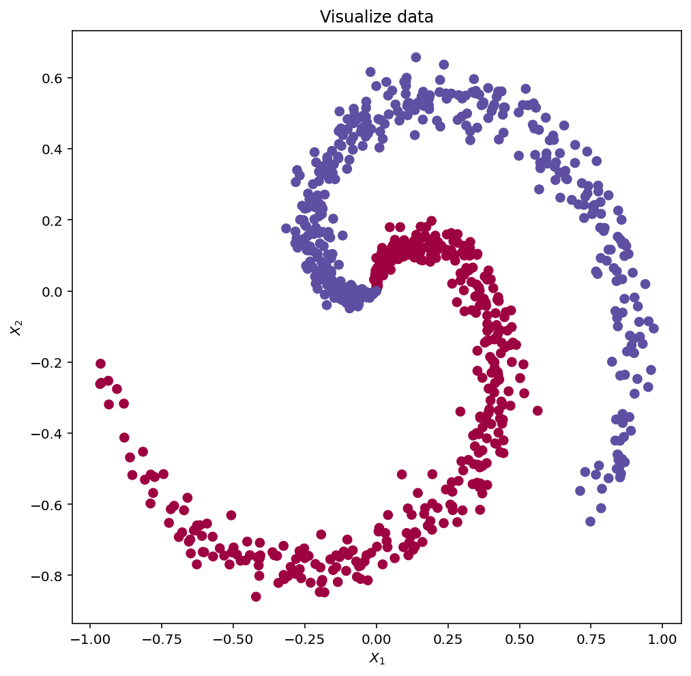
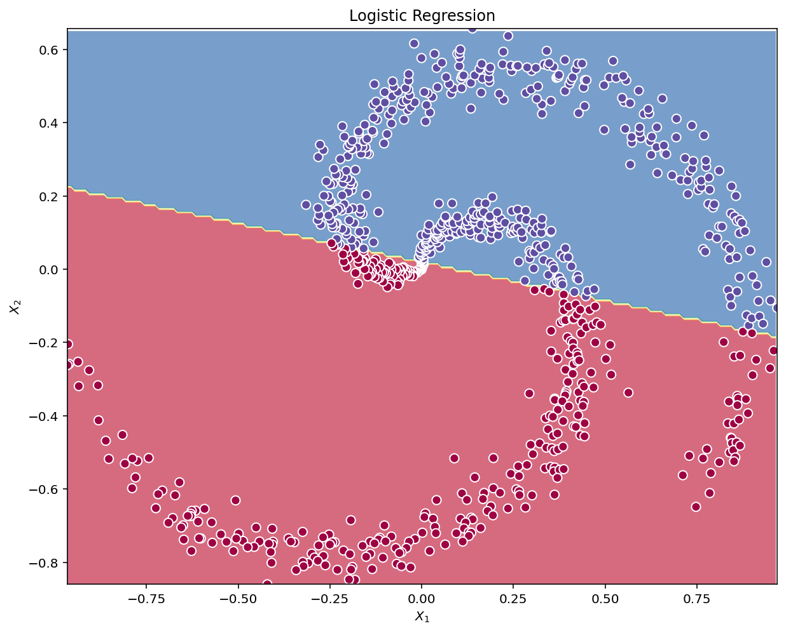

# Package imports
import numpy as np
import matplotlib.pyplot as plt
import sklearn
import sklearn.datasets as datasets
import sklearn.linear_model
import copy as copy
%config InlineBackend.figure_format = 'retina'
%config InlineBackend.print_figure_kwargs={'facecolor' : "w"}
np.random.seed(42) # set a seed so that the results are consistentIn this notebook I build a simple neural network, having a single hidden layer. Next, I compare this model for its classification accuracy to a boilerplate logistic regression.
- Implement a 2-class classification neural network with a single hidden layer
- Use units with a non-linear activation function, such as tanh
- Compute the cross entropy loss
- Implement forward and backward propagation
This notebook was inspired by Andrew Ng’s Deep Learning Specialization tutorial on Coursera
Dataset
Code to make spirals is adapted from:
http://cs231n.github.io/neural-networks-case-study/
N = 400 # number of points per class
D = 2 # dimensionality
K = 2 # number of spokes
X = np.zeros((N*K,D)) # data matrix (each row = single example)
Y = np.zeros(N*K, dtype='int') # class labels
for j in range(K):
ix = range(N*j,N*(j+1))
r = np.linspace(0, 1, N) # radius
t = np.linspace(j*4.2, (j+1)*4.2, N) + np.random.randn(N)*0.2 # theta
X[ix] = np.c_[r*np.sin(t), r*np.cos(t)]
Y[ix] = (0 if j % 2 == 0 else 1)
X = copy.deepcopy(X.T)
Y = copy.deepcopy(Y.reshape(-1,1).T)fig, ax = plt.subplots(1,1, figsize=(8,8))
# lets visualize the data:
ax.scatter(X[0, :], X[1, :], c=Y.ravel(), s=40, cmap=plt.cm.Spectral)
ax.set_xlabel('$X_1$')
ax.set_ylabel('$X_2$')
ax.set_title('Visualize data')Text(0.5, 1.0, 'Visualize data')
shape_X = X.shape
shape_Y = Y.shape
print ('The shape of X is: ' + str(shape_X))
print ('The shape of Y is: ' + str(shape_Y))The shape of X is: (2, 800)
The shape of Y is: (1, 800)Simple Logistic Regression
Before building a full neural network, lets first see how logistic regression performs on this problem. You can use sklearn’s built-in functions to do that. Run the code below to train a logistic regression classifier on the dataset.
# Train the logistic regression classifier
clf = sklearn.linear_model.LogisticRegression();
clf.fit(X.T, Y.ravel());Convenience function to plot a decision boundary for the classification model
def plot_decision_boundary(func, x_input, y_input):
xx_1, xx_2 = np.mgrid[np.min(x_input[:,0]):np.max(x_input[:,0]):.01, np.min(x_input[:,1]):np.max(x_input[:,1]):.01]
grid = np.c_[xx_1.ravel(), xx_2.ravel()]
y_pred_grid = func(grid).reshape(xx_1.shape)
y_pred = func(x_input)
fig, ax = plt.subplots(figsize=(10, 10))
contour = ax.contourf(xx_1, xx_2, y_pred_grid, alpha=0.7, cmap="Spectral")
ax.scatter(x_input[:,0], x_input[:, 1], c=y_pred, s=50, cmap="Spectral", edgecolor="white", linewidth=1)
lims = [np.min([ax.get_xlim(), ax.get_ylim()]), # min of both axes
np.max([ax.get_xlim(), ax.get_ylim()]), # max of both axes
]
ax.set(aspect='equal',
xlim=(np.min(x_input[:,0]), np.max(x_input[:,0])), ylim=(np.min(x_input[:,1]),np.max(x_input[:,1])),
xlabel="$X_1$", ylabel="$X_2$")plot_decision_boundary(lambda x: clf.predict(x), X.T, Y.T)
plt.title("Logistic Regression")Text(0.5, 1.0, 'Logistic Regression')
# Print accuracy
LR_predictions = clf.predict(X.T)
print ('Accuracy of logistic regression: %d ' % float((np.dot(Y, LR_predictions) + np.dot(1-Y, 1-LR_predictions))/float(Y.size)*100) +
'% ' + "(percentage of correctly labelled datapoints)")Accuracy of logistic regression: 66 % (percentage of correctly labelled datapoints)Interpretation: The dataset is not linearly separable, so logistic regression doesn’t perform well. Hopefully a neural network will do better.
Neural Network model
Logistic regression did not work well on the dataset. Let’s train a Neural Network with a single hidden layer and see if it does any better.
Here is basic framework for the model: ")
Mathematically:
For one example \(x^{(i)}\):
\[ z^{[1] (i)} = W^{[1]} x^{(i)} + b^{[1]}\tag{1} \]
\[ a^{[1] (i)} = \tanh(z^{[1] (i)})\tag{2} \]
\[ z^{[2] (i)} = W^{[2]} a^{[1] (i)} + b^{[2]}\tag{3} \]
\[ \hat{y}^{(i)} = a^{[2] (i)} = \sigma(z^{ [2] (i)})\tag{4} \]
\[ y^{(i)}_{prediction} = \begin{cases} 1 & \mbox{if } a^{[2](i)} > 0.5 \\ 0 & \mbox{otherwise } \end{cases}\tag{5} \]
Given the predictions on all the examples, you can also compute the cost \(J\) as follows:
\[ J = - \frac{1}{m} \sum\limits_{i = 0}^{m} \large\left(\small y^{(i)}\log\left(a^{[2] (i)}\right) + (1-y^{(i)})\log\left(1- a^{[2] (i)}\right) \large \right) \small \tag{6} \]
The general methodology to build a Neural Network is to: 1. Define the neural network structure ( # of input units, # of hidden units, etc). 2. Initialize the model’s parameters 3. Loop: - Implement forward propagation - Compute loss - Implement backward propagation to get the gradients - Update parameters (gradient descent)
Defining the neural network structure
Define three variables:
- n_x: the size of the input layer
- n_h: the size of the hidden layer (set this to 4)
- n_y: the size of the output layerdef layer_sizes(X, Y, n_h=4):
"""
Arguments:
X -- input dataset of shape (input size, number of examples)
Y -- labels of shape (output size, number of examples)
Returns:
n_x -- the size of the input layer
n_h -- the size of the hidden layer
n_y -- the size of the output layer
"""
n_x = X.shape[0] # size of input layer
n_h = n_h
n_y = Y.reshape(-1,1).T.shape[0] # size of output layer
return (n_x, n_h, n_y)(n_x, n_h, n_y) = layer_sizes(X, Y)
print("The size of the input layer is: n_x = " + str(n_x))
print("The size of the hidden layer is: n_h = " + str(n_h))
print("The size of the output layer is: n_y = " + str(n_y))The size of the input layer is: n_x = 2
The size of the hidden layer is: n_h = 4
The size of the output layer is: n_y = 1Initialize the model’s parameters
- Initialize the weights matrices with random values.
- Use:
np.random.randn(a,b) * 0.01to randomly initialize a matrix of shape (a,b).
- Use:
- Initialize the bias vectors as zeros.
- Use:
np.zeros((a,b))to initialize a matrix of shape (a,b) with zeros.
- Use:
def initialize_parameters(n_x, n_h, n_y):
"""
Argument:
n_x -- size of the input layer
n_h -- size of the hidden layer
n_y -- size of the output layer
Returns:
params -- python dictionary containing your parameters:
W1 -- weight matrix of shape (n_h, n_x)
b1 -- bias vector of shape (n_h, 1)
W2 -- weight matrix of shape (n_y, n_h)
b2 -- bias vector of shape (n_y, 1)
"""
np.random.seed(42) # we set up a seed so that your output matches ours although the initialization is random.
W1 = np.random.randn(n_h, n_x) * 0.01
b1 = np.zeros((n_h,1))
W2 = np.random.randn(n_y, n_h) * 0.01
b2 = np.zeros((n_y,1))
assert (W1.shape == (n_h, n_x))
assert (b1.shape == (n_h, 1))
assert (W2.shape == (n_y, n_h))
assert (b2.shape == (n_y, 1))
parameters = {"W1": W1,
"b1": b1,
"W2": W2,
"b2": b2}
return parametersForward-pass
Implement forward_propagation():
- Retrieve each parameter from the dictionary “parameters” (which is the output of
initialize_parameters()) by usingparameters[".."]. - Implement Forward Propagation. Compute \(Z^{[1]}, A^{[1]}, Z^{[2]}\) and \(A^{[2]}\) (the vector of all your predictions on all the examples in the training set).
- Values needed in the backpropagation are stored in “
cache”. Thecachewill be given as an input to the backpropagation function.
def sigmoid(x):
z = 1/(1 + np.exp(-x))
return zdef forward_propagation(X, parameters):
"""
Argument:
X -- input data of size (n_x, m)
parameters -- python dictionary containing your parameters (output of initialization function)
Returns:
A2 -- The sigmoid output of the second activation
cache -- a dictionary containing "Z1", "A1", "Z2" and "A2"
"""
# Retrieve each parameter from the dictionary "parameters"
W1 = parameters['W1']
b1 = parameters['b1']
W2 = parameters['W2']
b2 = parameters['b2']
### END CODE HERE ###
# Implement Forward Propagation
Z1 = np.dot(W1,X) + b1
A1 = np.tanh(Z1)
Z2 = np.dot(W2,A1) + b2
A2 = sigmoid(Z2)
assert(A2.shape == (1, X.shape[1]))
cache = {"Z1": Z1,
"A1": A1,
"Z2": Z2,
"A2": A2}
return A2, cacheLoss function
Compute the cost function as follows:
\[ J = - \frac{1}{m} \sum\limits_{i = 1}^{m} \large{(} \small y^{(i)}\log\left(a^{[2] (i)}\right) + (1-y^{(i)})\log\left(1- a^{[2] (i)}\right) \large{)} \small\tag{13} \]
def compute_cost(A2, Y):
"""
Computes the cross-entropy cost given in equation (13)
Arguments:
A2 -- The sigmoid output of the second activation, of shape (1, number of examples)
Y -- "true" labels vector of shape (1, number of examples)
Returns:
cost -- cross-entropy cost given equation (13)
"""
m = Y.shape[1] # number of example
# Compute the cross-entropy cost
logprobs = np.dot(Y,np.log(A2).T) + np.dot((1-Y),np.log((1-A2)).T)
cost = -logprobs/m
cost = float(np.squeeze(cost)) # makes sure cost is the dimension we expect. E.g., turns [[17]] into 17
assert(isinstance(cost, float))
return costBack-propogation
Using the cache computed during forward propagation, now implement backward propagation.
\[ \frac{\partial \mathcal{J} }{ \partial z_{2}^{(i)} } = \frac{1}{m} (a^{[2](i)} - y^{(i)}) \]
\[ \frac{\partial \mathcal{J} }{ \partial W_2 } = \frac{\partial \mathcal{J} }{ \partial z_{2}^{(i)} } a^{[1] (i) T} \]
\[ \frac{\partial \mathcal{J} }{ \partial b_2 } = \sum_i{\frac{\partial \mathcal{J} }{ \partial z_{2}^{(i)}}} \]
\[ \frac{\partial \mathcal{J} }{ \partial z_{1}^{(i)} } = W_2^T \frac{\partial \mathcal{J} }{ \partial z_{2}^{(i)} } * ( 1 - a^{[1] (i) 2}) \]
\[ \frac{\partial \mathcal{J} }{ \partial W_1 } = \frac{\partial \mathcal{J} }{ \partial z_{1}^{(i)} } X^T \]
\[ \frac{\partial \mathcal{J} _i }{ \partial b_1 } = \sum_i{\frac{\partial \mathcal{J} }{ \partial z_{1}^{(i)}}} \]
- \(*\) denotes elementwise multiplication.
- Gradients for each later:
- dW1 = \(\frac{\partial \mathcal{J} }{ \partial W_1 }\)
- db1 = \(\frac{\partial \mathcal{J} }{ \partial b_1 }\)
- dW2 = \(\frac{\partial \mathcal{J} }{ \partial W_2 }\)
- db2 = \(\frac{\partial \mathcal{J} }{ \partial b_2 }\)
def backward_propagation(parameters, cache, X, Y):
"""
Implement the backward propagation using the instructions above.
Arguments:
parameters -- python dictionary containing our parameters
cache -- a dictionary containing "Z1", "A1", "Z2" and "A2".
X -- input data of shape (2, number of examples)
Y -- "true" labels vector of shape (1, number of examples)
Returns:
grads -- python dictionary containing your gradients with respect to different parameters
"""
m = X.shape[1]
# First, retrieve W1 and W2 from the dictionary "parameters".
W1 = parameters['W1']
W2 = parameters['W2']
# Retrieve also A1 and A2 from dictionary "cache".
A1 = cache['A1']
A2 = cache['A2']
# Backward propagation: calculate dW1, db1, dW2, db2.
dZ2 = A2 - Y
dW2 = (1/m) * np.dot(dZ2,A1.T)
db2 = (1/m) * np.sum(dZ2,axis=1, keepdims=True)
dZ1 = np.dot(W2.T, dZ2) * (1 - np.power(A1, 2))
dW1 = (1/m) * np.dot(dZ1, X.T)
db1 = (1/m) * np.sum(dZ1, axis=1, keepdims=True)
grads = {"dW1": dW1,
"db1": db1,
"dW2": dW2,
"db2": db2}
return gradsGeneral gradient descent formalism: \[ \theta = \theta - \alpha \frac{\partial J }{ \partial \theta }\]
where: \(\alpha\) is the learning rate and \(\theta\) represents a parameter.
def update_parameters(parameters, grads, learning_rate = 1.2):
"""
Updates parameters using the gradient descent update rule given above
Arguments:
parameters -- python dictionary containing your parameters
grads -- python dictionary containing your gradients
Returns:
parameters -- python dictionary containing your updated parameters
"""
# Retrieve each parameter from the dictionary "parameters"
W1 = parameters['W1']
b1 = parameters['b1']
W2 = parameters['W2']
b2 = parameters['b2']
# Retrieve each gradient from the dictionary "grads"
dW1 = grads['dW1']
db1 = grads['db1']
dW2 = grads['dW2']
db2 = grads['db2']
# Update rule for each parameter
W1 = W1 - learning_rate*dW1
b1 = b1 - learning_rate*db1
W2 = W2 - learning_rate*dW2
b2 = b2 - learning_rate*db2
parameters = {"W1": W1,
"b1": b1,
"W2": W2,
"b2": b2}
return parametersIntegrate previous parts nn_model()
def nn_model(X, Y, n_h, num_iterations = 10000, print_cost=False):
"""
Arguments:
X -- dataset of shape (2, number of examples)
Y -- labels of shape (1, number of examples)
n_h -- size of the hidden layer
num_iterations -- Number of iterations in gradient descent loop
print_cost -- if True, print the cost every 1000 iterations
Returns:
parameters -- parameters learnt by the model. They can then be used to predict.
"""
np.random.seed(42)
n_x, n_h, n_y = layer_sizes(X, Y, n_h=n_h)
# Initialize parameters
parameters = initialize_parameters(n_x, n_h, n_y)
# Loop (gradient descent)
for i in range(0, num_iterations):
# Forward propagation. Inputs: "X, parameters". Outputs: "A2, cache".
A2, cache = forward_propagation(X, parameters)
# Cost function. Inputs: "A2, Y, parameters". Outputs: "cost".
cost = compute_cost(A2, Y)
# Backpropagation. Inputs: "parameters, cache, X, Y". Outputs: "grads".
grads = backward_propagation(parameters, cache, X, Y)
# Gradient descent parameter update. Inputs: "parameters, grads". Outputs: "parameters".
parameters = update_parameters(parameters, grads, learning_rate = 1.2)
# Print the cost every 1000 iterations
if print_cost and i % 1000 == 0:
print ("Cost after iteration %i: %f" %(i, cost))
return parametersPredictions
Use the model to predict: predict().
Use forward propagation to predict results.
predictions = \(y_{prediction} = \mathbb 1 \text{{activation > 0.5}} = \begin{cases} 1 & \text{if}\ activation > 0.5 \\ 0 & \text{otherwise} \end{cases}\)
def predict(parameters, X):
"""
Using the learned parameters, predicts a class for each example in X
Arguments:
parameters -- python dictionary containing your parameters
X -- input data of size (n_x, m)
Returns
predictions -- vector of predictions of our model (red: 0 / blue: 1)
"""
# Computes probabilities using forward propagation, and classifies to 0/1 using 0.5 as the threshold.
A2, cache = forward_propagation(X, parameters)
threshold = 0.5
predictions = (A2 > threshold)
return predictionsIt is time to run the model and see how it performs on a planar dataset. Run the following code to test your model with a single hidden layer of \(n_h\) hidden units.
# Build a model with a n_h-dimensional hidden layer
parameters = nn_model(X, Y, n_h = 4, num_iterations = 10000, print_cost=True)Cost after iteration 0: 0.693141
Cost after iteration 1000: 0.052671
Cost after iteration 2000: 0.040765
Cost after iteration 3000: 0.032499
Cost after iteration 4000: 0.027457
Cost after iteration 5000: 0.023722
Cost after iteration 6000: 0.020082
Cost after iteration 7000: 0.016282
Cost after iteration 8000: 0.013001
Cost after iteration 9000: 0.010872def plot_decision_boundary_NN(func, x_input, y_input, ax=None):
xx_1, xx_2 = np.mgrid[np.min(x_input[:,0]):np.max(x_input[:,0]):.01, np.min(x_input[:,1]):np.max(x_input[:,1]):.01]
grid = np.c_[xx_1.ravel(), xx_2.ravel()].T
y_pred_grid = func(grid).reshape(xx_1.shape)
y_pred = func(x_input.T)
if ax == None:
fig, ax = plt.subplots(1,1, figsize=(10,10))
contour = ax.contourf(xx_1, xx_2, y_pred_grid, alpha=0.7, cmap="Spectral")
ax.scatter(x_input[:,0], x_input[:, 1], c=y_pred, s=50, cmap="Spectral", edgecolor="white", linewidth=1)
lims = [np.min([ax.get_xlim(), ax.get_ylim()]), # min of both axes
np.max([ax.get_xlim(), ax.get_ylim()]), # max of both axes
]
ax.set(aspect='equal',
xlim=(np.min(x_input[:,0]), np.max(x_input[:,0])), ylim=(np.min(x_input[:,1]),np.max(x_input[:,1])),
xlabel="$X_1$", ylabel="$X_2$")
return ax# Plot the decision boundary
plot_decision_boundary_NN(lambda x: predict(parameters, x), X.T, Y.T)
plt.title("Decision Boundary for hidden layer size " + str(4))Text(0.5, 1.0, 'Decision Boundary for hidden layer size 4')
# Print accuracy
predictions = predict(parameters, X)
print ('Accuracy: %d' % float((np.dot(Y,predictions.T) + np.dot(1-Y,1-predictions.T))/float(Y.size)*100) + '%')Accuracy: 99%Accuracy is really high compared to Logistic Regression. The model has spirals! Neural networks are able to learn even highly non-linear decision boundaries, unlike logistic regression.

Reference:
- http://scs.ryerson.ca/~aharley/neural-networks/
- http://cs231n.github.io/neural-networks-case-study/